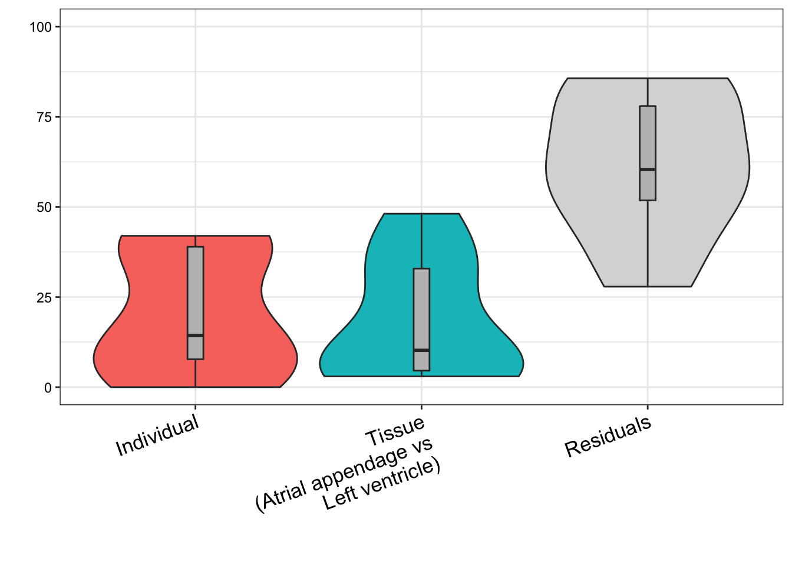

ResponseToReviewer_Point9
Last updated: 2020-09-23
Checks: 6 1
Knit directory: Comparative_eQTL/analysis/
This reproducible R Markdown analysis was created with workflowr (version 1.5.0). The Checks tab describes the reproducibility checks that were applied when the results were created. The Past versions tab lists the development history.
The R Markdown file has unstaged changes. To know which version of the R Markdown file created these results, you’ll want to first commit it to the Git repo. If you’re still working on the analysis, you can ignore this warning. When you’re finished, you can run wflow_publish to commit the R Markdown file and build the HTML.
Great job! The global environment was empty. Objects defined in the global environment can affect the analysis in your R Markdown file in unknown ways. For reproduciblity it’s best to always run the code in an empty environment.
The command set.seed(20190319) was run prior to running the code in the R Markdown file. Setting a seed ensures that any results that rely on randomness, e.g. subsampling or permutations, are reproducible.
Great job! Recording the operating system, R version, and package versions is critical for reproducibility.
Nice! There were no cached chunks for this analysis, so you can be confident that you successfully produced the results during this run.
Great job! Using relative paths to the files within your workflowr project makes it easier to run your code on other machines.
Great! You are using Git for version control. Tracking code development and connecting the code version to the results is critical for reproducibility. The version displayed above was the version of the Git repository at the time these results were generated.
Note that you need to be careful to ensure that all relevant files for the analysis have been committed to Git prior to generating the results (you can use wflow_publish or wflow_git_commit). workflowr only checks the R Markdown file, but you know if there are other scripts or data files that it depends on. Below is the status of the Git repository when the results were generated:
Ignored files:
Ignored: .DS_Store
Ignored: .RData
Ignored: .Rhistory
Ignored: .Rproj.user/
Ignored: WorkingManuscript.zip
Ignored: WorkingManuscript/
Ignored: analysis/.DS_Store
Ignored: analysis/.Rhistory
Ignored: analysis/figure/
Ignored: analysis_temp/.DS_Store
Ignored: big_data/
Ignored: code/.DS_Store
Ignored: code/snakemake_workflow/.DS_Store
Ignored: code/snakemake_workflow/.Rhistory
Ignored: data/.DS_Store
Ignored: data/PastAnalysesDataToKeep/.DS_Store
Ignored: figures/
Ignored: output/.DS_Store
Untracked files:
Untracked: analysis/20200907_Response_Point_02.Rmd
Untracked: analysis/20200907_Response_Point_04.Rmd
Untracked: data/c5.all.v7.1.symbols.gmt
Untracked: data/c5.all.v7.1.symbols.gmt.categories.tsv.gz
Untracked: data/h.all.v7.1.symbols.gmt
Unstaged changes:
Modified: analysis/20200907_Response_OriginalComments.Rmd
Modified: analysis/20200907_Response_Point_06.Rmd
Modified: analysis/20200907_Response_Point_09-2.Rmd
Modified: analysis/20200907_Response_Point_09.Rmd
Modified: analysis/20200907_Response_Point_11.Rmd
Modified: analysis/Final_2_DispersionPlots.Rmd
Modified: analysis_temp/TabulaMuris_analysis2.Rmd
Note that any generated files, e.g. HTML, png, CSS, etc., are not included in this status report because it is ok for generated content to have uncommitted changes.
These are the previous versions of the R Markdown and HTML files. If you’ve configured a remote Git repository (see ?wflow_git_remote), click on the hyperlinks in the table below to view them.
| File | Version | Author | Date | Message |
|---|---|---|---|---|
| Rmd | 0e88516 | Benjmain Fair | 2020-09-10 | update site, address reviewers |
| html | 0e88516 | Benjmain Fair | 2020-09-10 | update site, address reviewers |
Overview
Original reviewer point:
Did the authors consider looking for cell-type QTLs? They state several times in the paper the possibility that genetic factors may influence cell types. They have enough data - at least in human - to obtain QTLs for specific cell types, as others have done (Marderstein et. al. Nat Comms 2020; Donovan et. al. Nat Comms 2020). If these cell type QTLs were enriched near genes with a high dispersion, this may bolster the author’s argument that genetic factors underlie dispersion by affecting cell type composition.
Here I will attempt the reviewer’s suggestion. GTEx companion paper has already published cell type deconvolutions from the bulk heart data (Supplemental table 17). From here I can attempt to map QTLs for cell type, similar to what was performed in Marderstein et. al. Nat Comms 2020. In this case, they had cell type porportions for various cell types, and performed a GWAS on each cell type porportion phenotype. Since these proportion phenotypes are all inter-related, maybe it will be simpler at first to just do a GWAS on the first PC of the cell porportion matrix. I’ll do some exploratory analysis with this idea here, and then implement the GWAS in the snakemake.
Analysis
First load libraries
library(tidyverse)
library(knitr)
library(gplots)
library(variancePartition)
library(latex2exp)Now, read in the published GTEx cell type deconvolutions (CIBERSORT) for heart left ventricle.
CellTypePorportions <- read.csv("../data/41467_2020_14561_MOESM18_ESM.csv") %>% dplyr::select(-P.value)
head(CellTypePorportions) %>% kable()| Input.Sample | cardiac_muscle_cell | cardiac_neuron | endocardial_cell | endothelial_cell | fibroblast | leukocyte | myofibroblast_cell | smooth_muscle_cell |
|---|---|---|---|---|---|---|---|---|
| GTEX-1117F-0726-SM-5GIEN | 0.4141443 | 0.0390111 | 0.0247209 | 0.0173081 | 0.2976485 | 0.0735854 | 0.0539711 | 0.0796106 |
| GTEX-111FC-0626-SM-5N9CU | 0.5934551 | 0.0304994 | 0.0000000 | 0.0000000 | 0.2718323 | 0.0159834 | 0.0000000 | 0.0882298 |
| GTEX-111FC-0826-SM-5GZWO | 0.6191502 | 0.0391776 | 0.0000000 | 0.0884489 | 0.0896640 | 0.0193383 | 0.0317195 | 0.1125015 |
| GTEX-111VG-0326-SM-5GZX7 | 0.4135017 | 0.0633654 | 0.0000000 | 0.0216553 | 0.3748008 | 0.0000000 | 0.0064154 | 0.1202614 |
| GTEX-111YS-0326-SM-5GZZ3 | 0.7092151 | 0.0367780 | 0.0071714 | 0.0568536 | 0.0534341 | 0.0368498 | 0.0273321 | 0.0723659 |
| GTEX-111YS-0426-SM-5987O | 0.6929481 | 0.0390429 | 0.0000000 | 0.1227475 | 0.0000000 | 0.0000000 | 0.0729518 | 0.0723097 |
CellTypePorportions %>%
gather(key="cell.type", value="percent", -Input.Sample) %>%
ggplot(aes(x=reorder(Input.Sample, percent, FUN=max), y=percent, fill=cell.type)) +
geom_bar(stat="identity") +
scale_y_continuous(limits = c(-0.001,1.001), expand = c(0, 0)) +
theme_bw() +
theme(axis.title.x=element_blank(),
axis.text.x=element_blank(),
axis.ticks.x=element_blank())
| Version | Author | Date |
|---|---|---|
| 0e88516 | Benjmain Fair | 2020-09-10 |
I may want to consider removing outlier samples…
For now, let’s plot oeruse how the cell porportion phenotypes covary, and plot samples in PC space. I think it makes sense to center but not rescale data… I want the more predominant cell types to matter more, since ultimately I am interested in if cell type QTLs may explain the highly dispersed genes in the sample, and cell types more predominant in the bulk samples should inuitively matter more.
#Covariance Matrix
CellTypePorportions %>%
column_to_rownames("Input.Sample") %>%
cov() %>%
heatmap.2(trace = "none", cexRow=0.5, cexCol=0.5, col=bluered(75))
| Version | Author | Date |
|---|---|---|
| 0e88516 | Benjmain Fair | 2020-09-10 |
#PCA
PC.results <- CellTypePorportions %>%
column_to_rownames("Input.Sample") %>%
as.matrix() %>%
prcomp(center=T, scale=F)
screeplot(PC.results, type="lines")
| Version | Author | Date |
|---|---|---|
| 0e88516 | Benjmain Fair | 2020-09-10 |
PCs <- as.data.frame(PC.results$x[,1:3])
ggplot(PCs, aes(x=PC1, y=PC2)) +
geom_point() +
theme_bw()
| Version | Author | Date |
|---|---|---|
| 0e88516 | Benjmain Fair | 2020-09-10 |
#Correlate PCs back to original Cell Type Porportions
Cor.Mat <- cor(PCs, (CellTypePorportions %>% column_to_rownames("Input.Sample")))
heatmap.2(t(Cor.Mat), trace = "none", cexRow=0.5, col=bluered(75), Colv=FALSE)
| Version | Author | Date |
|---|---|---|
| 0e88516 | Benjmain Fair | 2020-09-10 |
Seems reasonable to just do GWAS on the first two PCs, the first of which mostly represents cardiac muscle cell and fibroblast, the second PC mostly correlates with myofibroblast and endothelial.
Let’s write out these first 2 PC phenotype proxies, as well as the original cardiac muscle cell portions, and endothelial cell porportions. I may consider running a GWAS on all of those phenotypes. I will also inverse normalize phenotypes here. This should moderate impact of outliers, so I won’t do any outlier filtering.
InverseNormTrans <- function(x){
return(qnorm((rank(x,na.last="keep")-0.5)/sum(!is.na(x))))
}
DataToOutput <- PCs %>%
rownames_to_column("Input.Sample") %>%
dplyr::select(Input.Sample, PC1, PC2) %>%
left_join(
(CellTypePorportions %>% dplyr::select(Input.Sample, cardiac_muscle_cell, endothelial_cell)),
by="Input.Sample"
) %>%
gather(key="phenotype", value="value", -Input.Sample) %>%
group_by(phenotype) %>%
mutate(NormalizedPhenotype=InverseNormTrans(value)) %>%
ungroup() %>%
dplyr::select(-value) %>%
pivot_wider(id_cols="Input.Sample", names_from="phenotype", values_from = NormalizedPhenotype)But actually, now I realize that a lot of these samples are independent biopsy replicates from the same individual. This is a good oppurtunity to check that the cell type porportions aren’t completely technical. I expect that cell type porportion estimates (or their PCs) from the same indivudals should be better correlated than from unrelated individuals.
#How many samples have replicates
DataToOutput %>%
mutate(Ind=str_match(Input.Sample, "^GTEX-\\w+")) %>%
count(Ind) %>% pull(n) %>% hist()
| Version | Author | Date |
|---|---|---|
| 0e88516 | Benjmain Fair | 2020-09-10 |
Let’s read more of the GTEx annotations about these samples, to learn about the difference between replicates..
Samples <- read.table("../data/GTExAnnotations/GTEx_Analysis_v8_Annotations_SampleAttributesDS.txt", header=T, sep='\t', quote="") %>%
filter(SAMPID %in% DataToOutput$Input.Sample) %>%
separate(SAMPID, into = c("GTEX", "Ind", "tissueSiteID", "SM", "Aliquot"), remove = F, sep="-",)
table(Samples$SMTSD)
Adipose - Subcutaneous
0
Adipose - Visceral (Omentum)
0
Adrenal Gland
0
Artery - Aorta
0
Artery - Coronary
0
Artery - Tibial
0
Bladder
0
Brain - Amygdala
0
Brain - Anterior cingulate cortex (BA24)
0
Brain - Caudate (basal ganglia)
0
Brain - Cerebellar Hemisphere
0
Brain - Cerebellum
0
Brain - Cortex
0
Brain - Frontal Cortex (BA9)
0
Brain - Hippocampus
0
Brain - Hypothalamus
0
Brain - Nucleus accumbens (basal ganglia)
0
Brain - Putamen (basal ganglia)
0
Brain - Spinal cord (cervical c-1)
0
Brain - Substantia nigra
0
Breast - Mammary Tissue
0
Cells - Cultured fibroblasts
0
Cells - EBV-transformed lymphocytes
0
Cells - Leukemia cell line (CML)
0
Cervix - Ectocervix
0
Cervix - Endocervix
0
Colon - Sigmoid
0
Colon - Transverse
0
Esophagus - Gastroesophageal Junction
0
Esophagus - Mucosa
0
Esophagus - Muscularis
0
Fallopian Tube
0
Heart - Atrial Appendage
297
Heart - Left Ventricle
303
Kidney - Cortex
0
Kidney - Medulla
0
Liver
0
Lung
0
Minor Salivary Gland
0
Muscle - Skeletal
0
Nerve - Tibial
0
Ovary
0
Pancreas
0
Pituitary
0
Prostate
0
Skin - Not Sun Exposed (Suprapubic)
0
Skin - Sun Exposed (Lower leg)
0
Small Intestine - Terminal Ileum
0
Spleen
0
Stomach
0
Testis
0
Thyroid
0
Uterus
0
Vagina
0
Whole Blood
0 #How many samples
dim(Samples)[1] 600 68#How many unique aliquots amongst the 600 samples
Samples$Aliquot %>% unique() %>% length()[1] 600DataToOutput %>%
mutate(Ind=str_match(Input.Sample, "^GTEX-\\w+")) %>%
add_count(Ind) %>%
filter(n==2) %>%
left_join(Samples, by=c("Input.Sample"="SAMPID")) %>% pull(SMTSD) %>% table().
Adipose - Subcutaneous
0
Adipose - Visceral (Omentum)
0
Adrenal Gland
0
Artery - Aorta
0
Artery - Coronary
0
Artery - Tibial
0
Bladder
0
Brain - Amygdala
0
Brain - Anterior cingulate cortex (BA24)
0
Brain - Caudate (basal ganglia)
0
Brain - Cerebellar Hemisphere
0
Brain - Cerebellum
0
Brain - Cortex
0
Brain - Frontal Cortex (BA9)
0
Brain - Hippocampus
0
Brain - Hypothalamus
0
Brain - Nucleus accumbens (basal ganglia)
0
Brain - Putamen (basal ganglia)
0
Brain - Spinal cord (cervical c-1)
0
Brain - Substantia nigra
0
Breast - Mammary Tissue
0
Cells - Cultured fibroblasts
0
Cells - EBV-transformed lymphocytes
0
Cells - Leukemia cell line (CML)
0
Cervix - Ectocervix
0
Cervix - Endocervix
0
Colon - Sigmoid
0
Colon - Transverse
0
Esophagus - Gastroesophageal Junction
0
Esophagus - Mucosa
0
Esophagus - Muscularis
0
Fallopian Tube
0
Heart - Atrial Appendage
201
Heart - Left Ventricle
201
Kidney - Cortex
0
Kidney - Medulla
0
Liver
0
Lung
0
Minor Salivary Gland
0
Muscle - Skeletal
0
Nerve - Tibial
0
Ovary
0
Pancreas
0
Pituitary
0
Prostate
0
Skin - Not Sun Exposed (Suprapubic)
0
Skin - Sun Exposed (Lower leg)
0
Small Intestine - Terminal Ileum
0
Spleen
0
Stomach
0
Testis
0
Thyroid
0
Uterus
0
Vagina
0
Whole Blood
0 Ok, so what seems to be happening is that the replicates are all atrial appendage vs left ventricle. For purposes of GWAS, I should just filter for left-ventricle samples, since I ultimately want to relate this back to the left ventricle samples I calculated dispersion for. But, as for the question of individual reproducibility - that dispersion isn’t completely due to technical differences in biopsy sites - it would be interesting to check whether cell composition is more due to individual, or biopsy site. For example, if it is due to individual differences, I expect the cell type composition of different sites (atrial appendage vs left ventricle, picked from matched individuals) to be more correlated than comparing just left ventricle when two samples are picked from random individuals.
#What is correlation between left ventricle and atrial appendage, across individuals
ScatterData1 <- DataToOutput %>%
left_join(Samples, by=c("Input.Sample"="SAMPID")) %>%
dplyr::select(PC1, Ind, SMTSD) %>%
pivot_wider(id_cols="Ind", names_from="SMTSD", values_from = "PC1") %>%
drop_na() %>%
column_to_rownames("Ind")
ggplot(ScatterData1, aes(x=`Heart - Atrial Appendage`, y=`Heart - Left Ventricle`)) +
geom_point() +
theme_bw()
| Version | Author | Date |
|---|---|---|
| 0e88516 | Benjmain Fair | 2020-09-10 |
cor(ScatterData1) Heart - Atrial Appendage Heart - Left Ventricle
Heart - Atrial Appendage 1.0000000 0.5256553
Heart - Left Ventricle 0.5256553 1.0000000#What is correlation between randomly selected individuals, within left ventricle individual
ScatterData2 <- DataToOutput %>%
left_join(Samples, by=c("Input.Sample"="SAMPID")) %>%
dplyr::select(PC1, Ind, SMTSD) %>%
filter(SMTSD=="Heart - Atrial Appendage") %>%
mutate(RandomGroupAssignment=sample(2, n(), replace = T)) %>%
dplyr::group_by(RandomGroupAssignment) %>%
mutate(row_number = row_number()) %>%
ungroup() %>%
pivot_wider(id_cols = "row_number", names_from = "RandomGroupAssignment", values_from = "PC1") %>%
drop_na() %>%
column_to_rownames("row_number")
ggplot(ScatterData2, aes(x=`1`, y=`2`)) +
geom_point() +
xlab("Random individual A, left ventricle") +
ylab("Random individual B, left ventricle") +
theme_bw()
| Version | Author | Date |
|---|---|---|
| 0e88516 | Benjmain Fair | 2020-09-10 |
cor(ScatterData2) 1 2
1 1.00000000 -0.02041527
2 -0.02041527 1.00000000Ok this is good. So it seems that the cell type composition is correlated across individuals. Let’s replot the barplots or samples in PC space but separated by left ventricle and atrial appendage.
PCs %>%
rownames_to_column("Input.Sample") %>%
left_join(Samples, by=c("Input.Sample"="SAMPID")) %>%
dplyr::select(PC1, PC2, Ind, SMTSD) %>%
ggplot(aes(x=PC1, y=PC2, color=SMTSD)) +
geom_point() +
theme_bw()
| Version | Author | Date |
|---|---|---|
| 0e88516 | Benjmain Fair | 2020-09-10 |
CellTypePorportions %>%
gather(key="cell.type", value="percent", -Input.Sample) %>%
left_join(Samples, by=c("Input.Sample"="SAMPID")) %>%
ggplot(aes(x=reorder(Input.Sample, percent, FUN=max), y=percent, fill=cell.type)) +
geom_bar(stat="identity") +
scale_y_continuous(limits = c(-0.001,1.001), expand = c(0, 0)) +
facet_wrap(~SMTSD) +
theme_bw() +
theme(axis.title.x=element_blank(),
axis.text.x=element_blank(),
axis.ticks.x=element_blank())
| Version | Author | Date |
|---|---|---|
| 0e88516 | Benjmain Fair | 2020-09-10 |
Ok, actually, PC2 represents the cell types associated with atrial appendage, but it still seems true that the PC1 (cardiac muscle cell and fibroblast axis) correlates across individuals quite well.
Let’s filter for left ventricle samples only, redo the PCA analysis, and write out quantile normalized phenotypes.
#PCA
PC.results <- CellTypePorportions %>%
left_join(
(Samples %>% dplyr::select(SAMPID, SMTSD)),
by=c("Input.Sample"="SAMPID")) %>%
filter(SMTSD=="Heart - Left Ventricle") %>%
dplyr::select(-SMTSD) %>%
column_to_rownames("Input.Sample") %>%
as.matrix() %>%
prcomp(center=T, scale=F)
screeplot(PC.results, type="lines")
| Version | Author | Date |
|---|---|---|
| 0e88516 | Benjmain Fair | 2020-09-10 |
PCs <- as.data.frame(PC.results$x[,1:3])
ggplot(PCs, aes(x=PC1, y=PC2)) +
geom_point() +
theme_bw()
| Version | Author | Date |
|---|---|---|
| 0e88516 | Benjmain Fair | 2020-09-10 |
#Correlate PCs back to original Cell Type Porportions
df.ToCorrelate <- inner_join(
PCs %>% rownames_to_column("Input.Sample"),
CellTypePorportions,
by="Input.Sample") %>% column_to_rownames("Input.Sample")
Cor.Mat <- cor(df.ToCorrelate[,1:3], df.ToCorrelate[,4:ncol(df.ToCorrelate)])
heatmap.2(t(Cor.Mat), trace = "none", cexRow=0.5, col=bluered(75), Colv=FALSE)
| Version | Author | Date |
|---|---|---|
| 0e88516 | Benjmain Fair | 2020-09-10 |
I think just using the PC1 as the phenotype, which mostly captures the cardiomyocte:fibroblast axis, is reasonable enough…
DataToOutput <- PCs %>%
rownames_to_column("Input.Sample") %>%
dplyr::select(Input.Sample, PC1) %>%
left_join(
(CellTypePorportions %>% dplyr::select(Input.Sample, cardiac_muscle_cell, fibroblast)),
by="Input.Sample"
) %>%
gather(key="phenotype", value="value", -Input.Sample) %>%
group_by(phenotype) %>%
mutate(NormalizedPhenotype=InverseNormTrans(value)) %>%
ungroup() %>%
dplyr::select(-value) %>%
pivot_wider(id_cols="Input.Sample", names_from="phenotype", values_from = NormalizedPhenotype)
head(DataToOutput) %>% kable()| Input.Sample | PC1 | cardiac_muscle_cell | fibroblast |
|---|---|---|---|
| GTEX-111FC-0826-SM-5GZWO | 0.3371901 | -0.3371901 | 0.4812159 |
| GTEX-111YS-0426-SM-5987O | 0.0082728 | -0.0165462 | -0.9033567 |
| GTEX-1122O-0826-SM-5GICV | -1.1563825 | 1.0216836 | -0.9033567 |
| GTEX-117YW-0326-SM-5N9CY | 1.3993229 | -1.3993229 | 1.3565712 |
| GTEX-117YX-1126-SM-5H128 | -2.3976272 | 2.3976272 | -0.9033567 |
| GTEX-11DXX-0326-SM-5PNWC | -0.9674216 | 0.8909849 | -0.9033567 |
Actually, I should also inverse normal transform the data before doing GWAS.
DataToOutput <- DataToOutput %>%
gather(key="phenotype", value="value", -Input.Sample) %>%
group_by(phenotype) %>%
mutate(quantile.normalized.value = InverseNormTrans(value)) %>%
ungroup() %>%
dplyr::select(-value) %>%
spread(key="phenotype", value="quantile.normalized.value")
##Check quantile normalization...
#Data looks normally distributed
qqnorm(DataToOutput$cardiac_muscle_cell)
| Version | Author | Date |
|---|---|---|
| 0e88516 | Benjmain Fair | 2020-09-10 |
#With sd=1, suggesting I didn't accidently aggregate all phenotypes before quantile normalization
sd(DataToOutput$cardiac_muscle_cell)[1] 0.9995252#And normalized data is monotonic increasinging from original data.
inner_join(
DataToOutput,
CellTypePorportions,
by="Input.Sample",
suffix=c(".QQnorm", ".raw")) %>%
ggplot(aes(x=cardiac_muscle_cell.QQnorm, y=cardiac_muscle_cell.raw)) +
geom_point()
| Version | Author | Date |
|---|---|---|
| 0e88516 | Benjmain Fair | 2020-09-10 |
and finally, write out the quantile normalized cell porportion phenotypes
DataToOutput %>%
mutate(Ind=str_match(Input.Sample, "^GTEX-\\w+")) %>%
dplyr::select(Ind, everything(), -Input.Sample) %>%
write_tsv("../output/CellProportionPhenotypesNormalizedForGWAS.tab")Next, I want another way to communicate the idea that there is a strong individual component to cell type proportions in heart samples, perhaps stronger than the tissue type (left ventricle vs atrial appendage) component. I will use variance partition package to evaluate this.
Let’s go back to the original CIBERSORT estimates for GTEx samples, and before using those as phenotypes (instead of gene expression traits) for variancePartition package, let’s quantile normalize those phenotypes to better fit the assumptions of the models used in variancePartition.
NormalizedPorportions <- CellTypePorportions %>%
gather(key="cell.type", value="percent", -Input.Sample) %>%
mutate(percent=jitter(percent)) %>% #add jitter to break ties before qqnorm
group_by(cell.type) %>%
mutate(NormalizedPhenotype=InverseNormTrans(percent)) %>%
ungroup() %>%
pivot_wider(id_cols = Input.Sample, names_from = cell.type, values_from =percent) %>%
column_to_rownames("Input.Sample") %>% t()
NormalizedPorportions[,1:10] %>% kable()| G | TEX-1117F-0726-SM-5GIEN G | TEX-111FC-0626-SM-5N9CU G | TEX-111FC-0826-SM-5GZWO G | TEX-111VG-0326-SM-5GZX7 G | TEX-111YS-0326-SM-5GZZ3 G | TEX-111YS-0426-SM-5987O G | TEX-1122O-0626-SM-5N9B9 G | TEX-1122O-0826-SM-5GICV G | TEX-117XS-0726-SM-5H131 G | TEX-117YW-0326-SM-5N9CY |
|---|---|---|---|---|---|---|---|---|---|---|
| cardiac_muscle_cell | 0.4141356 | 0.5934666 | 0.6191653 | 0.4135015 | 0.7092296 | 0.6929498 | 0.6811521 | 0.7749831 | 0.5346833 | 0.3191788 |
| cardiac_neuron | 0.0390136 | 0.0304842 | 0.0391785 | 0.0633567 | 0.0367920 | 0.0390338 | 0.0419828 | 0.0271575 | 0.0313309 | -0.0000032 |
| endocardial_cell | 0.0247089 | -0.0000009 | -0.0000061 | 0.0000182 | 0.0071781 | 0.0000031 | -0.0000116 | 0.0000135 | 0.0040322 | -0.0000083 |
| endothelial_cell | 0.0173226 | 0.0000130 | 0.0884472 | 0.0216611 | 0.0568733 | 0.1227622 | 0.0576320 | 0.0587050 | 0.0372841 | 0.2523361 |
| fibroblast | 0.2976619 | 0.2718415 | 0.0896680 | 0.3747867 | 0.0534478 | -0.0000125 | 0.0693122 | -0.0000076 | 0.2654345 | 0.2224203 |
| leukocyte | 0.0735981 | 0.0159788 | 0.0193535 | 0.0000094 | 0.0368364 | -0.0000083 | 0.0489582 | 0.0378909 | 0.0149666 | -0.0000063 |
| myofibroblast_cell | 0.0539597 | 0.0000108 | 0.0317200 | 0.0063956 | 0.0273143 | 0.0729573 | 0.0378072 | 0.0490657 | 0.0026425 | 0.0799423 |
| smooth_muscle_cell | 0.0796298 | 0.0882192 | 0.1125175 | 0.1202596 | 0.0723462 | 0.0723279 | 0.0631420 | 0.0521713 | 0.1095611 | 0.1261548 |
info <- Samples %>%
dplyr::select(SAMPID, Ind, SMTSD) %>%
filter(SAMPID %in% colnames(NormalizedPorportions)) %>%
column_to_rownames("SAMPID")
head(info) %>% kable()| In | d SM | TSD |
|---|---|---|
| GTEX-1117F-0726-SM-5GIEN | 1117F | Heart - Atrial Appendage |
| GTEX-111FC-0626-SM-5N9CU | 111FC | Heart - Atrial Appendage |
| GTEX-111FC-0826-SM-5GZWO | 111FC | Heart - Left Ventricle |
| GTEX-111VG-0326-SM-5GZX7 | 111VG | Heart - Atrial Appendage |
| GTEX-111YS-0326-SM-5GZZ3 | 111YS | Heart - Atrial Appendage |
| GTEX-111YS-0426-SM-5987O | 111YS | Heart - Left Ventricle |
# form <- ~ SMTSD + Ind
form <- ~ (1|SMTSD) + (1|Ind)
varPart <- fitExtractVarPartModel( NormalizedPorportions, form, info )Dividing work into 8 chunks...
Total: 1 svp <- sortCols( varPart ) %>%
dplyr::rename("Tissue\n(Atrial appendage vs\nLeft ventricle)"=SMTSD, Individual=Ind)
plot.vp.Bars <- plotPercentBars( vp)
kable(vp) Individual Tissue(Atrial appendage vs Left ventricle) Residuals ——————– ———– ——————————————– ———- cardiac_muscle_cell 0.4197858 0.0297513 0.5504629 cardiac_neuron 0.0000000 0.1431259 0.8568741 endocardial_cell 0.1844964 0.0612018 0.7543017 endothelial_cell 0.0153511 0.3435168 0.6411320 fibroblast 0.3971254 0.3240560 0.2788186 leukocyte 0.1018766 0.0431625 0.8549609 myofibroblast_cell 0.0980631 0.4811283 0.4208086 smooth_muscle_cell 0.3869839 0.0467099 0.5663061
plotVarPart( vp )
Conclusions and final figures
Tissue biopsies from left ventricle vs atrial appendage from the same donor correlate better than biopsies from left ventricle from random donors. This is consistent with cell type heterogeneity being due to individual level factors, and not purely technical issues regarding dissecting anatomically similar heart regions. For this analysis we don’t speculate as to how much of the individual level factors are environmental (including age, lifestyle, etc) versus genetic, though, throughout the paper we obviously recognize both play a factor.
Now I will create and/or save the final figures from this analysis worth presenting to the paper or response to reviewers:
#Pvariance partition bars plot
ggsave("../figures/OriginalArt/ResponseToReviewers.CellType.Vp.bars.pdf", plot.vp.Bars, height=3, width=5)
#What is correlation between left ventricle and atrial appendage, across individuals
ScatterData1 <- CellTypePorportions %>%
left_join(Samples, by=c("Input.Sample"="SAMPID")) %>%
dplyr::select(cardiac_muscle_cell, Ind, SMTSD) %>%
pivot_wider(id_cols="Ind", names_from="SMTSD", values_from = "cardiac_muscle_cell") %>%
drop_na() %>%
column_to_rownames("Ind")
A.cor<-signif(cor(ScatterData1, method = "spearman")[1,2], 2)
lb1 <- bquote(rho == .(A.cor))
ggplot(ScatterData1, aes(x=`Heart - Atrial Appendage`, y=`Heart - Left Ventricle`)) +
geom_point() +
xlab("Proportion cardiac muscle cell\nHeart - left ventricle") +
ylab("Proportion cardiac muscle cell\nHeart - Atrial appendage") +
# ggtitle("Matched individuals,\ncorrelation of tissue samples") +
annotate("text",x=Inf,y=-Inf, label=lb1, hjust=1, vjust=-0.1, parse=F) +
theme_bw()
ggsave("../figures/OriginalArt/ResponseToReviewers.CellType.ScatterA.pdf", height=3, width=3)
#What is correlation between randomly selected individuals, within left ventricle individual
set.seed(0)
ScatterData2 <- CellTypePorportions %>%
left_join(Samples, by=c("Input.Sample"="SAMPID")) %>%
dplyr::select(cardiac_muscle_cell, Ind, SMTSD) %>%
filter(SMTSD=="Heart - Atrial Appendage") %>%
mutate(RandomGroupAssignment=sample(2, n(), replace = T)) %>%
dplyr::group_by(RandomGroupAssignment) %>%
mutate(row_number = row_number()) %>%
ungroup() %>%
pivot_wider(id_cols = "row_number", names_from = "RandomGroupAssignment", values_from = "cardiac_muscle_cell") %>%
drop_na() %>%
column_to_rownames("row_number")
B.cor <- signif(cor(ScatterData2, method = "spearman")[1,2],2)
lb1 <- bquote(rho == .(B.cor))
ggplot(ScatterData2, aes(x=`1`, y=`2`)) +
geom_point() +
xlab("Proportion cardiac muscle cell\nRandom individual A") +
ylab("Proportion cardiac muscle cell\nRandom individual B") +
annotate("text",x=Inf,y=-Inf, label=lb1, hjust=1, vjust=-0.1, parse=F) +
# ggtitle("Matched tissue (Left venticle),\ncorrelation of random individuals") +
theme_bw()
ggsave("../figures/OriginalArt/ResponseToReviewers.CellType.ScatterB.pdf", height=3, width=3)
#Admix plot
AdmixPlotData <- CellTypePorportions %>%
separate(Input.Sample, into = c("GTEX", "Ind", "tissueSiteID", "SM", "Aliquot"), remove = F, sep="-",) %>%
add_count(Ind) %>%
filter(n==2) %>%
dplyr::select(-c("GTEX", "Ind", "tissueSiteID", "SM", "Aliquot", "n")) %>%
gather(key="cell.type", value="percent", -Input.Sample) %>%
left_join(Samples, by=c("Input.Sample"="SAMPID")) %>%
dplyr::select(cell.type:Ind, SMTSD, -GTEX) %>%
pivot_wider(names_from =c("SMTSD", "cell.type"), values_from="percent", names_sep=".") %>%
mutate(CardiacMuscleCellPercentile=percent_rank(`Heart - Left Ventricle.cardiac_muscle_cell`)) %>%
dplyr::select("Heart - Left Ventricle.cardiac_muscle_cell", everything()) %>%
arrange(CardiacMuscleCellPercentile) %>%
gather(key="Tissue.celltype", value="percent", -c("Ind", "CardiacMuscleCellPercentile")) %>%
separate(Tissue.celltype, into=c("Tissue", "cell.type"), sep = "\\.")
ggplot(AdmixPlotData, aes(x=reorder(Ind, percent, FUN=max))) +
# ggplot(AdmixPlotData, aes(x=CardiacMuscleCellPercentile)) +
geom_bar(stat="identity", aes(fill=cell.type, y=percent)) +
geom_rug(aes(color=CardiacMuscleCellPercentile), show_guide = T) +
scale_color_gradientn(colours = rainbow(5), name="Individual; colored by rank proportion\ncardiac muscle cells in left ventricle") +
scale_y_continuous(limits = c(-0.001,1.001), expand = c(0, 0)) +
facet_wrap(~Tissue) +
ylab("cell type fraction") +
guides(
color = guide_colourbar(title.position="top",ticks=F, direction = "horizontal", barwidth=12, raster=T, label=F),
fill = guide_legend(title.position = "top", direction = "vertical", nrow=3)) +
theme_bw() +
theme(axis.title.x=element_blank(),
axis.text.x=element_blank(),
axis.ticks.x=element_blank()) +
theme(legend.position="bottom")
ggsave("../figures/OriginalArt/ResponseToReviewers.CellType.GTEXadmix.bars.pdf", height=4,width=8)
#PCA
PC.results <- CellTypePorportions %>%
separate(Input.Sample, into = c("GTEX", "Ind", "tissueSiteID", "SM", "Aliquot"), remove = F, sep="-",) %>%
add_count(Ind) %>%
filter(n==2) %>%
dplyr::select(-c("GTEX", "tissueSiteID", "Ind", "SM", "Aliquot", "n")) %>%
column_to_rownames("Input.Sample") %>%
as.matrix() %>%
prcomp(center=T, scale=F)
screeplot(PC.results, type="lines")
PCs <- as.data.frame(PC.results$x[,1:3])
PCs %>%
rownames_to_column("Input.Sample") %>%
left_join(Samples, by=c("Input.Sample"="SAMPID")) %>%
dplyr::select(PC1:PC3, Input.Sample, SMTSD) %>%
separate(Input.Sample, into = c("GTEX", "Ind", "tissueSiteID", "SM", "Aliquot"), remove = F, sep="-") %>%
left_join(
AdmixPlotData %>% distinct(Ind, "Heart - Left Ventricle", .keep_all=T) %>% dplyr::select(Ind, CardiacMuscleCellPercentile),
by="Ind"
) %>%
ggplot(aes(x=PC1, y=PC2, color=CardiacMuscleCellPercentile)) +
geom_point(aes(shape=SMTSD)) +
scale_color_gradientn(colours = rainbow(5)) +
theme_bw()
write_delim(vp %>% rownames_to_column("Cell type"), "../figures/OriginalArt/ResponseToReviewers.CellType.Vp.bars.source.tsv", delim='\t')
sessionInfo()R version 3.6.1 (2019-07-05)
Platform: x86_64-apple-darwin15.6.0 (64-bit)
Running under: macOS Catalina 10.15.5
Matrix products: default
BLAS: /Library/Frameworks/R.framework/Versions/3.6/Resources/lib/libRblas.0.dylib
LAPACK: /Library/Frameworks/R.framework/Versions/3.6/Resources/lib/libRlapack.dylib
locale:
[1] en_US.UTF-8/en_US.UTF-8/en_US.UTF-8/C/en_US.UTF-8/en_US.UTF-8
attached base packages:
[1] parallel stats graphics grDevices utils datasets methods
[8] base
other attached packages:
[1] latex2exp_0.4.0 variancePartition_1.14.1 Biobase_2.44.0
[4] BiocGenerics_0.30.0 scales_1.1.0 foreach_1.4.7
[7] limma_3.40.6 gplots_3.0.1.1 knitr_1.26
[10] forcats_0.4.0 stringr_1.4.0 dplyr_0.8.3
[13] purrr_0.3.3 readr_1.3.1 tidyr_1.0.0
[16] tibble_2.1.3 ggplot2_3.2.1 tidyverse_1.3.0
loaded via a namespace (and not attached):
[1] nlme_3.1-143 bitops_1.0-6 fs_1.3.1
[4] pbkrtest_0.4-8.6 lubridate_1.7.4 doParallel_1.0.15
[7] progress_1.2.2 httr_1.4.1 rprojroot_1.3-2
[10] tools_3.6.1 backports_1.1.5 R6_2.4.1
[13] KernSmooth_2.23-16 DBI_1.0.0 lazyeval_0.2.2
[16] colorspace_1.4-1 withr_2.1.2 prettyunits_1.0.2
[19] tidyselect_0.2.5 compiler_3.6.1 git2r_0.26.1
[22] cli_2.0.0 rvest_0.3.5 xml2_1.2.2
[25] labeling_0.3 caTools_1.17.1.3 digest_0.6.23
[28] minqa_1.2.4 rmarkdown_1.18 colorRamps_2.3
[31] pkgconfig_2.0.3 htmltools_0.4.0 lme4_1.1-23
[34] highr_0.8 dbplyr_1.4.2 rlang_0.4.1
[37] readxl_1.3.1 rstudioapi_0.10 farver_2.0.1
[40] generics_0.0.2 jsonlite_1.6 BiocParallel_1.18.1
[43] gtools_3.8.1 magrittr_1.5 Matrix_1.2-18
[46] Rcpp_1.0.5 munsell_0.5.0 fansi_0.4.0
[49] lifecycle_0.1.0 stringi_1.4.3 whisker_0.4
[52] yaml_2.2.0 MASS_7.3-51.4 plyr_1.8.5
[55] grid_3.6.1 gdata_2.18.0 promises_1.1.0
[58] crayon_1.3.4 lattice_0.20-38 haven_2.2.0
[61] splines_3.6.1 hms_0.5.2 zeallot_0.1.0
[64] pillar_1.4.2 boot_1.3-23 reshape2_1.4.3
[67] codetools_0.2-16 reprex_0.3.0 glue_1.3.1
[70] evaluate_0.14 modelr_0.1.5 vctrs_0.2.0
[73] nloptr_1.2.2.2 httpuv_1.5.2 cellranger_1.1.0
[76] gtable_0.3.0 assertthat_0.2.1 xfun_0.11
[79] broom_0.5.2 later_1.0.0 iterators_1.0.12
[82] workflowr_1.5.0 statmod_1.4.34 ellipsis_0.3.0